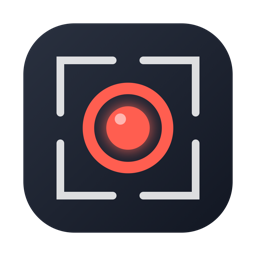

Screen recording with the moves you see in tech videos — a hold-to-zoom focus key, draw-on-screen radial menu, and multi-monitor merge.
One line in Terminal. Installs to /Applications, updates itself.
Hold your key while recording and the video zooms to your cursor, gliding as you move — your real screen stays untouched.
A hotkey pops a tool wheel at your cursor mid-recording: pen, highlighter, arrows, shapes, message bubbles, emoji, ruler, protractor, colors. The wheel never shows in the video.
Record every monitor at once, then arrange side-by-side with a divider, seamless ultrawide, or free drag & resize — exported as one video up to 8K.
Full screen, drag-an-area, or all monitors stitched in your true desktop layout. Native Retina pixels.
Two pills before you record: system audio and microphone. Both land as separate tracks.
ScreenCaptureKit + AVFoundation only. A menu-bar app — no dock clutter, no Electron, no third-party code.